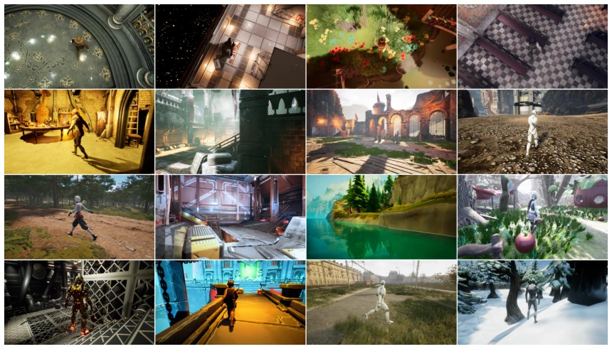
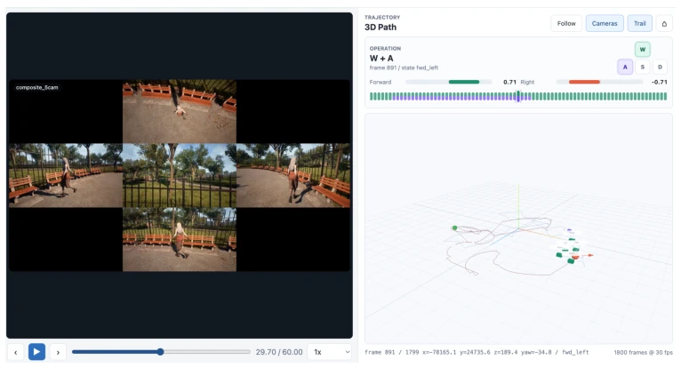
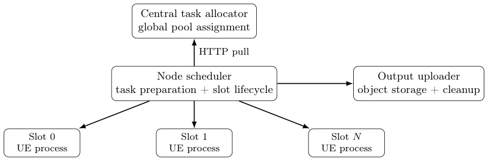
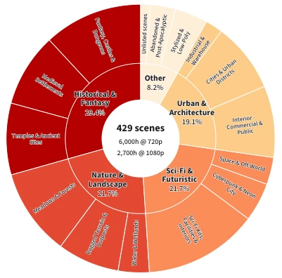

这篇论文本质上是一份“工程壮举”报告，而非算法创新。作者用 25 台 RTX 5090 集群硬生生“烧”出了 9000 小时视频数据，这种算力堆砌在 Embodied AI 圈子里确实让人眼红。但核心槽点在于：数据量大不等于数据好。虽然他们搞了审美和亮度过滤，但正如论文自己承认的，这些感知指标和下游模型性能的相关性仍是黑盒。把 UE 的渲染管线拆成两阶段（PIE 跑物理，MRQ 出图）是无奈之举，但也暴露了实时仿真与离线渲染的割裂。对于追求端到端效率的社区来说，这套流水线太重了，除非你的 World Model 真的缺数据到连互联网视频都凑不够。
This paper is essentially a report on an "engineering feat," rather than algorithmic innovation. The authors used a cluster of 25 RTX 5090s to forcibly "burn out" 9000 hours of video data, this accumulation of computing power is indeed enviable in the Embodied AI community. But the core criticism lies in: large data volume does not equal good data quality. Although they implemented aesthetic and brightness filtering, as admitted by the paper itself, the correlation between these perception metrics and downstream model performance remains a black box. Splitting the UE rendering pipeline into two stages (PIE for physics, MRQ for rendering) was a forced measure, but it also exposes the disconnect between real-time simulation and offline rendering. For the community pursuing end-to-end efficiency, this pipeline is too heavy, unless your World Model truly lacks data to the point where even internet videos are insufficient.
研究动机Motivation
构建交互式 World Model 的核心瓶颈在于数据。现有的互联网视频（如 Genie [2]、WorldPlay [4]）虽然视觉多样，但缺乏与视觉变化精确对齐的动作信号，只能靠推断，误差大。游戏数据（如 Matrix-Game 3.0 [11]）虽有明确控制，但受限于特定游戏引擎和场景。DreamX-World [5] 等尝试混合数据，但合成数据部分往往被简化描述。本文旨在解决这一上游问题：利用 UE 合成环境，生成动作与视频严格对齐的多视角数据。这不仅是数据工程，更是为了解决“动作 - 视觉”因果链在真实世界中不可观测的难题，为 EchoWM [12] 等模型提供可解释的训练信号。
The core bottleneck in building an interactive World Model lies in data. Existing internet videos (such as Genie [2], WorldPlay [4]) are visually diverse but lack action signals precisely aligned with visual changes, relying on inference with large errors. Game data (such as Matrix-Game 3.0 [11]) has clear control but is limited by specific game engines and scenarios. Attempts like DreamX-World [5] mix data, but the synthetic data portion is often described simplistically. This paper aims to solve this upstream problem: utilizing UE synthetic environments to generate multi-view data with strictly aligned actions and videos. This is not only data engineering but also to solve the problem of the "action-visual" causal chain being unobservable in the real world, providing interpretable training signals for models such as EchoWM [12].
方法Method
核心是双阶段生成流水线。Stage I 在 PIE 模式下运行物理仿真，记录角色状态、动作输入和相机轨迹，不生成图像，确保物理合理性。Stage II 读取轨迹文件，在独立进程中使用 MRQ 进行离线渲染，保证画质和抗锯齿。这种分离解决了实时物理与高质量渲染的冲突。系统架构上，采用分布式调度，中央分配器负责粗粒度任务，节点调度器管理本地 Slot 生命周期。关键创新是 Cache-Aware Scheduling，将场景池绑定到节点，避免冷启动开销。资产筛选包含渲染能力检查和基于 SpatialVID [10] 的审美/亮度过滤。可靠性方面，通过追加日志实现进度追踪，支持部分输出恢复和失败快照。
The core is a two-stage generation pipeline. Stage I runs physics simulation in PIE mode, recording character states, action inputs, and camera trajectories, without generating images, ensuring physical plausibility. Stage II reads trajectory files and uses MRQ for offline rendering in independent processes, ensuring image quality and anti-aliasing. This separation resolves the conflict between real-time physics and high-quality rendering. In terms of system architecture, distributed scheduling is adopted, with a central allocator responsible for coarse-grained tasks and a node scheduler managing local Slot lifecycles. The key innovation is Cache-Aware Scheduling, binding scene pools to nodes to avoid cold-start overhead. Asset filtering includes rendering capability checks and aesthetic/brightness filtering based on SpatialVID [10]. Regarding reliability, progress tracking is achieved through appended logs, supporting partial output recovery and failure snapshots.

Figure 1 Representative rendered observations from the five camera configurations used in the dataset. The top row shows top-down views, the bottom row shows back views, the center four examples show first-person views, and the examples on the left and right sides show the corresponding left- and right-side views. Different environments are intentionally sampled to illustrate both viewpoint variation and scene diversity.

Figure 5 Trajectory inspection interface used for qualitative verification and production debugging. The left panel shows the synchronized multi-view video, while the right panel displays the frame-level action state together with the 3D character and camera trajectories.
Experiments mainly demonstrate system scale rather than model performance. The dataset contains 429 scenes, 40 humanoid characters, 5 synchronized views, and 9 action classes. Produced 2691 hours of 1080p and 6076 hours of 720p video. Hardware usage involved 25 nodes, with 8 RTX 5090s per node. No training results for downstream World Models are provided, only stating that the data is used for EchoWM. Scene diversity covers categories such as history, sci-fi, nature, etc. Limitations lie in actions being limited to movement, lacking interaction. Filter thresholds are based on experience, not calibrated for downstream utility.

Figure 4 Distributed production architecture. The central service performs coarse-grained assignment, while each node independently manages high-frequency slot lifecycle operations and output transfer.
其他图片Other Figures

Figure 3 Semantic diversity of the production scene pool. The inner and outer rings show major and fine-grained scene categories, respectively.